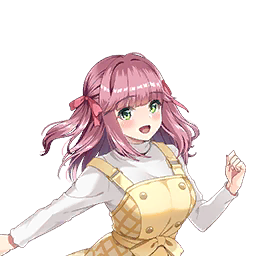

| 角色 | 对话 |
|---|---|
| 旁白 | 在事务所工作时， 阳葵真梦突然走了进来。 |
|  阳葵真梦 | 辛苦啦——！ 制作人在吗——？ |
| 制作人 | 啊，辛苦了。 真梦还是这么精神啊。 |
阳葵真梦 | 欸嘿嘿，有活力可是我的特长呀！ |
| 制作人 | 听说你今天要练舞来着...... |
| 旁白 | 视线转向电脑显示的日程表。 真梦的舞蹈课应该早就结束了—— |
阳葵真梦 | 不小心太入迷了... 回过神来已经跳了快3小时！ |
| 制作人 | 3小时... 完全看不出疲惫的样子呢。 |
阳葵真梦 | 最近有在推的偶像啦！ 想试着练那个孩子的编舞~ |
阳葵真梦 | 本来只想跳一会儿的， 结果开心得忘了时间！ |
| 旁白 | 不知是否无意识，真梦轻轻踏起了舞步。 明明在说话，脚下却毫无迟疑。 |
阳葵真梦 | 啊，对了对了！ 我有东西要交给制作人来着~ |
| 旁白 | 像是想起重要事情般，真梦的表情"啪"地亮了起来。 她嘟着嘴在包里窸窸窣窣翻找，终于掏出一个信封递给我。 |
阳葵真梦 | 那个...这个可以收下吗？ |
| 制作人 | 这是......？ |
阳葵真梦 | 刚说的最近在推的偶像，我拿到两张live门票哦！ 制作人要是有空的话，要不要一起去看？ |
| 制作人 | 啊，这个偶像难道是...... |
| 旁白 | 看着票面印刷的名字努力回想着 虽然还是新人，但听说是个表演超厉害的地下偶像。 |
阳葵真梦 | 又可爱又帅气，还充满创新力... 所以我刚才还在努力完美复刻她们的舞步呢！ |
| 制作人 | 原来如此。 谢谢你邀我，但和我去合适吗？ |
阳葵真梦 | 当然合适呀！ 我就是想和制作人一起去嘛！ |
阳葵真梦 | 本来计划和同样喜欢偶像的朋友去看的， 但她突然有急事... |
阳葵真梦 | 难得拿到票浪费掉太可惜啦， 而且我觉得制作人绝对会感兴趣的！ |
阳葵真梦 | 呐？一起看live，一起嗨， 热烈地讨论感想吧~！ |
| 旁白 | 真梦像等待答复般抬眼偷瞄着我，直勾勾地盯着。 歪着小脑袋投来闪闪发亮的期待目光，天真无邪的模样可爱极了。 |
| 制作人 | 明白了。 既然你这么热情邀请，我就当顺便做偶像研究陪你吧。 |
阳葵真梦 | 太好啦——！现在就开始期待了~ |
| 旁白 | 看着像孩子般雀跃的真梦，连我也被感染得开心起来。 |
| 旁白 | live当日 |
阳葵真梦 | 快开场了呢！ 啊，怎么办...明明不是自己的live却紧张起来了... |
| 制作人 | 看起来超级火爆啊。 照这势头可能快主流出道了... |
| 旁白 | 会场几乎满座，且观众年龄性别分布均衡，似乎获得了广泛支持 |
阳葵真梦 | 不止男观众，女观众也好多呀~大家都是粉丝吗？ |
| 制作人 | 谁知道呢。 男女一起来的也不少... 说不定也有约会来看偶像live的情侣。 |
阳葵真梦 | ......欸？ 约会来看live这种事存在的吗？ |
| 制作人 | 嗯，我觉得不算稀奇哦。 |
阳葵真梦 | 这、这样啊... 我还以为live纯粹是来看偶像的呢。 |
阳葵真梦 | 因为你看呀，眼前是偶像， 身边是恋人？ 该看哪边才好完全不知道嘛~！ |
| 旁白 | 对纯粹为看偶像而来的真梦而言，这大概是难以理解的状况。 |
| 制作人 | 这样想吧...就像看电影或去游乐园一样， 为了共享相同体验而来看live， 是不是就能接受了？ |
| 制作人 | 喏，你自己不也说过？ 想和我一起来看live，热烈讨论感想啊。 |
阳葵真梦 | ...原来如此。 那作为约会项目，来偶像live完全可行呢！ |
阳葵真梦 | 也就是说现场的各位情侣， 看完live后都会聊偶像话题聊得热火朝天吧... |
阳葵真梦 | 呵呵，总觉得这种关系真棒呀~ |
| 旁白 | 说着这些话环顾四周的真梦，露出宛如憧憬恋爱的少女般陶醉神情。 |
| 工作人员 | 今天会场非常拥挤——！请各位往中间靠拢——！ |
| 旁白 | 突然响起工作人员的声音。人群随之骚动起来。 |
| 制作人 | 哇哦...真梦，危险！往这边来。 |
| 旁白 | 为防真梦被挤倒，我伸出手。在人群推挤中形成了近乎搂住她肩膀的姿势。 |
阳葵真梦 | 呀！？制作人！ |
| 旁白 | 手触到肩膀的瞬间，真梦身体猛地僵直。 |
| 制作人 | 突然这样很抱歉。 但刚才你要被挤倒了。 |
阳葵真梦 | 没...那个...谢谢！ 得救了！ |
| 旁白 | 真梦的声音不知为何有些变调。瞥见她的脸正害羞地左右游移视线。 |
阳葵真梦 | ...现在的我们， 在周围人眼里是什么样子呢？ 说不定被当成情侣了... |
| 制作人 | 嗯？你说什么？ |
| 旁白 | 周遭喧闹淹没了真梦的声音。 |
阳葵真梦 | 没、没什么...！请别在意。 |
| 旁白 | 真梦像要甩开杂念般用力摇头。 |
阳葵真梦 | 喏、喏！好像要开幕了.... 集中精神看live！ |
| 旁白 | 会场灯光转暗，随着快节奏的开场曲，偶像们现身舞台。 震耳欲聋的欢呼撼动全场，热浪瞬间冲顶，我和真梦也投身其中。 |
| 旁白 | 散场后，我们两人混在从会场涌出的人潮中，在街上并肩走着。 |
| 旁白 | 看来live相当精彩。真梦的脸颊仍微微泛红，小巧可爱的嘴角始终上扬着。 |
阳葵真梦 | 真的超级——棒！今天live的曲目编排神了！开场曲虽然预料到了，但中段的流程完全超出期待—— |
阳葵真梦 | 啊对了对了！看到center位的舞蹈了吗！？ 那个动作我也一直在练！ |
阳葵真梦 | 但好难啊，总是跳不好... |
阳葵真梦 | 她居然能跳得那么完美！？ 让人真心觉得"这才是偶像啊"！ |
| 旁白 | 真梦语速飞快地倾诉着尚未冷却的兴奋。活脱脱狂热粉丝的模样，但她如此激动也情有可原——舞台表演确实精彩。 |
| 制作人 | 理解你为什么这么狂热。 表演和互动都很厉害。 |
| 制作人 | 歌舞自不用说，MC也很棒。成员个性鲜明，粉丝情绪也被调动得很好。 |
阳葵真梦 | 对吧！就是这样！ 她们可不只是表演厉害！ |
阳葵真梦 | 虽然很多人都对她们的歌舞给予好评， 但会欣赏MC环节的人可不多呢！ |
阳葵真梦 | 不过制作人果然懂行！邀你来真是太好了！ |
| 旁白 | 依然兴奋的真梦突然意识到什么似地捂住嘴。"欸嘿嘿"地害羞微笑，用泛红的脸颊凝视着我。 |
阳葵真梦 | 情侣的live约会原来是这种感觉呀！能和身边人...和重要的人共享最爱的事物，超级开心！ |
阳葵真梦 | 制作人，你还不会回去吧？ 让我们再多分享些今天的兴奋吧！欸嘿嘿！ |
| 旁白 | 真梦"蹦"地轻跳一下，满面笑容地"啾——"地抱住了我的胳膊。 live固然快乐又具参考价值，但能见到真梦这般模样才是最大收获。 |